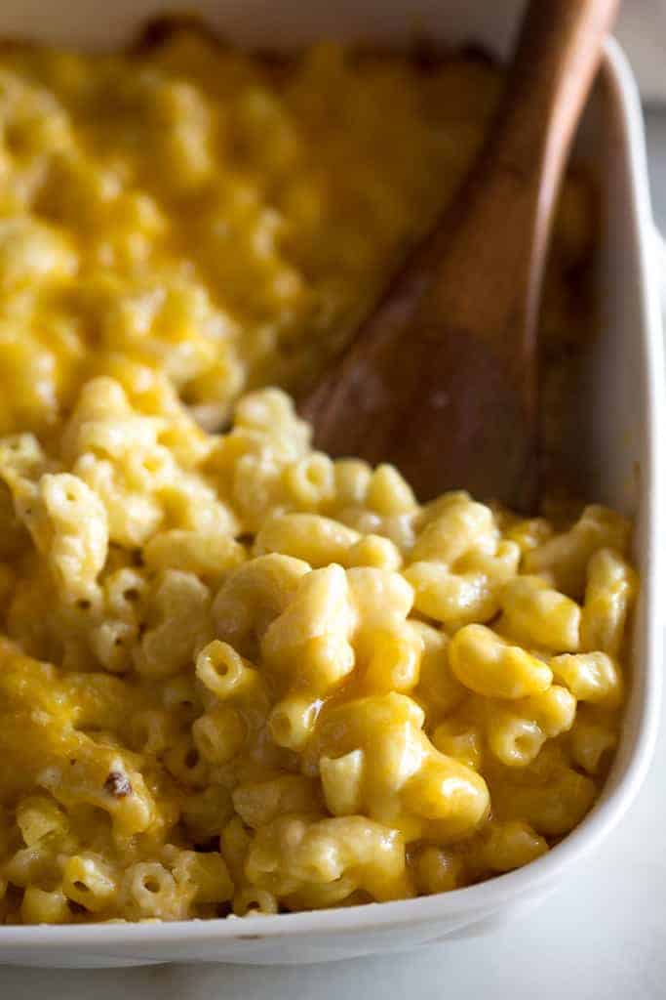

Mamaw's homemade recipe of cheesy goodness will surely bring the smiles to your next potluck. Easy to follow, no-frilli recipe using just cheddar cheese.
Ingredients
- 8 oz elbow macaroni
- 4 tablespoons of butter
- 1 tablespoon of flour
- 1/4 teaspoon of dry mustard
- 1 small yellow onion, minced
- 1 1/2 cup of milk
- 2 cups of shredded cheddar cheese
Instructions
- Preheat oven to 350F.
- Cook pasta and drain. Set aside.
- In saucepan, melt half the butter and add the onions, cooking over medium heat until translucent
- Stir in mustard, flour, and salt & pepper to taste.
- Add milk, stirring nonstop until thickened.
- Remove mixture from heat and add cheddar.
- Place cooked macaroni in 2 quart casserole pan and pour cheese over top
- Bake for 20min
- Serve immediately and enjoy!